88洞见scene公版最厉害的人，从不靠打架赢
🎬 你知道孙子兵法里最核心的思想是什么吗？不是教你怎么打，是教你怎样根本不用打。
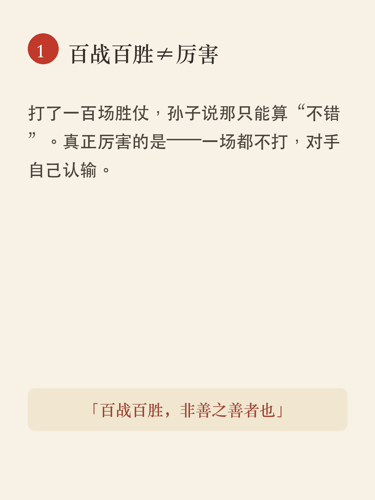
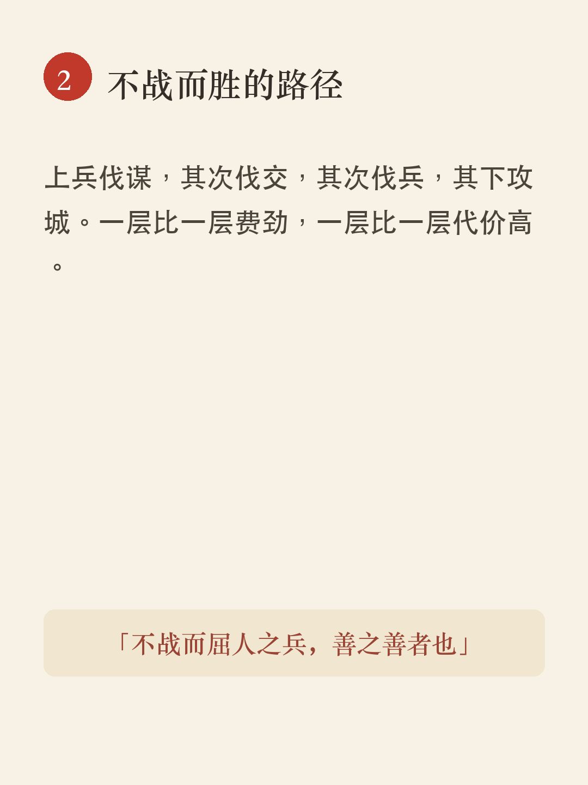
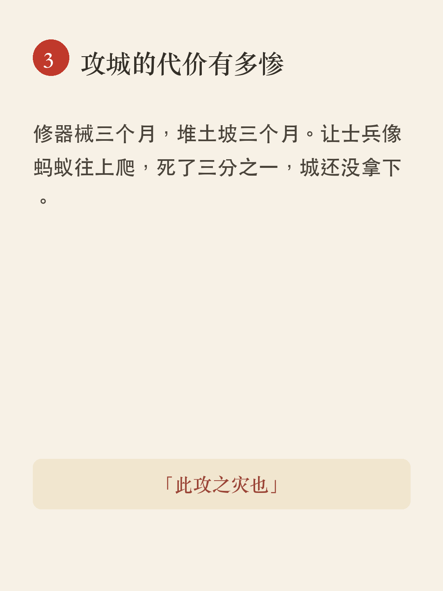
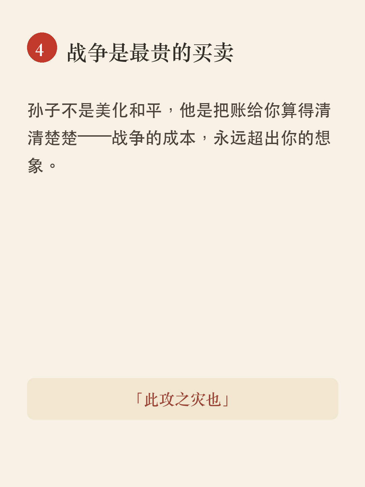
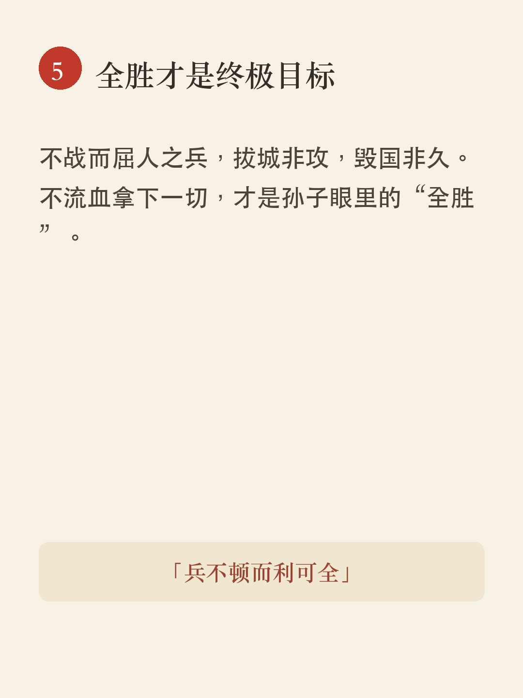
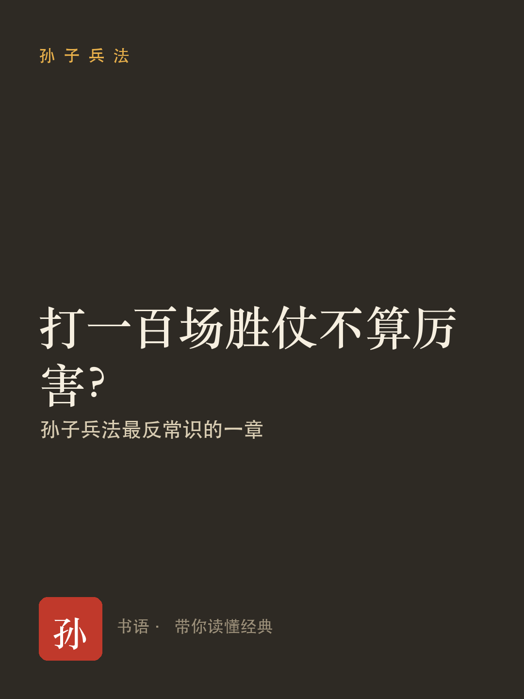
口播稿全文
你知道吗，《孙子兵法》最反常识的地方就在这儿——它最厉害的那一章，根本不是教你怎么打仗。
谋攻篇一开篇，孙子就说了那句被后世引用了2500多年的话：“是故百战百胜，非善之善者也；不战而屈人之兵，善之善者也。”
这句话什么意思？你打了一百场胜仗，那不叫厉害，那只能算“不错”。真正厉害的是——一场都不打，对手自己就认输了。
你可能会想，这不是废话吗？谁不想不战而胜？但孙子厉害的地方在于，他紧接着就告诉你路径。他说：“上兵伐谋，其次伐交，其次伐兵，其下攻城。”
伐谋，就是打掉对方的战略意图；伐交，就是切断对方的盟友；伐兵，是真刀真枪地野战；伐城，是攻城略地。一个比一个费劲，一个比一个代价高。
然后他专门用了一大段来讲攻城有多惨：“修橹轒轀，具器械，三月而后成；距堙，又三月而后已。将不胜其忿，而蚁附之，杀士三分之一，而城不拔者，此攻之灾也。”
准备攻城器械要三个月，堆土成坡要再三个月。将领急了，让士兵像蚂蚁一样往上爬，结果死了三分之一，城还没拿下。
你看，孙子不是在美化和平，他是把账给你算得清清楚楚——战争是这个世界上最贵的买卖。
所以他才说“善用兵者，屈人之兵而非战也，拔人之城而非攻也，毁人之国而非久也，必以全争于天下，故兵不顿而利可全”。
最理想的胜利是什么样的？对手的军队投降了，我没怎么打；对手的城池拿下了，我没强攻；对手的国家解体了，我没打多久。这才叫“全胜”。
这不是教你做老好人，这是教你算大账。
你以为孙子是个军事家，其实他是个经济学家。他的核心逻辑就一句话：真正的高手，永远在找那个成本最低、收益最大的解。而那个解，往往不需要流血。
74映照scene公版✓ 判官过审你打工人吵架前，庙算了吗
🎬 打仗前要庙算，你跟老板谈加薪前算过吗？
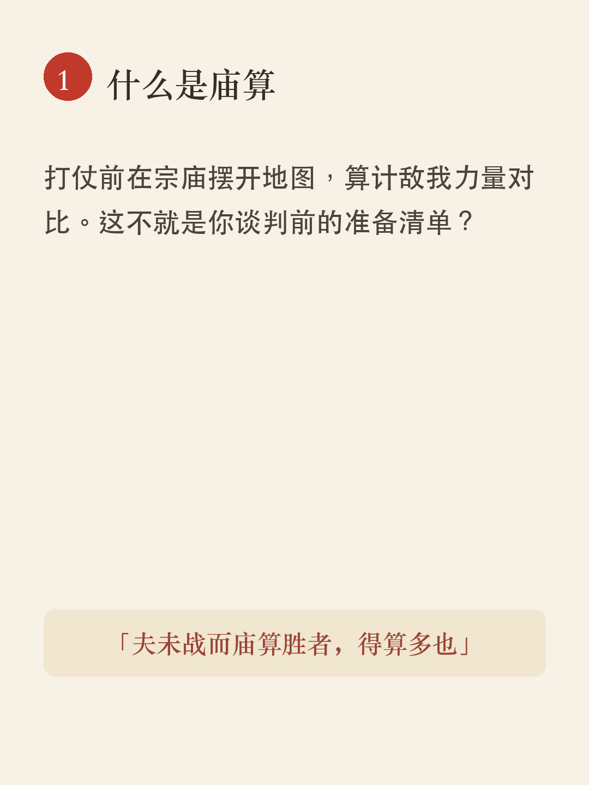
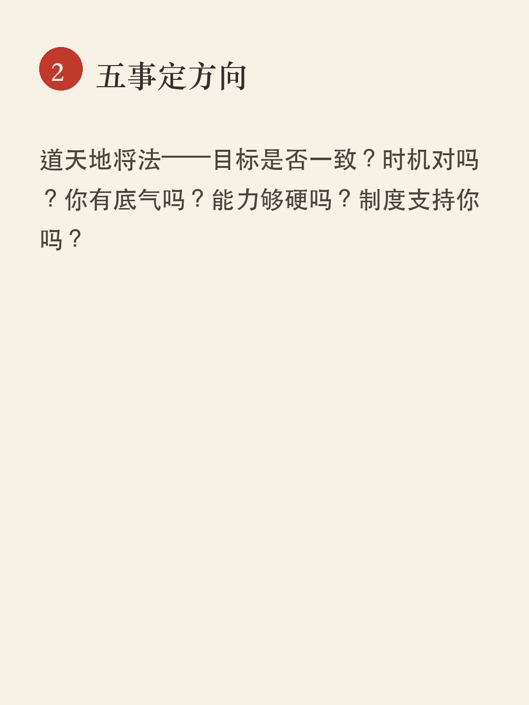
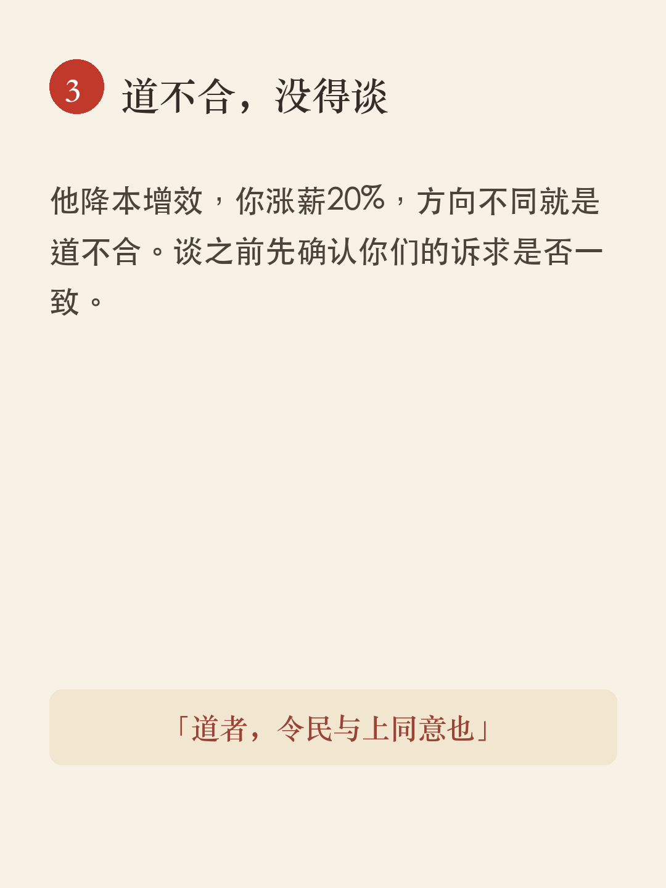
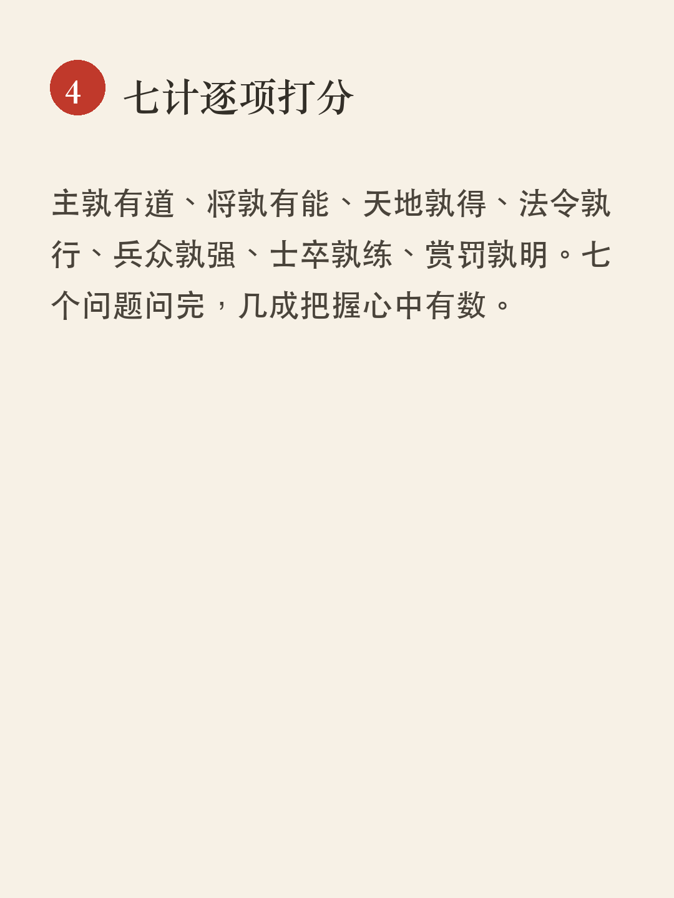
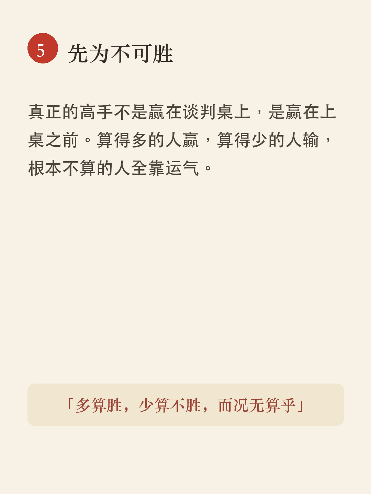
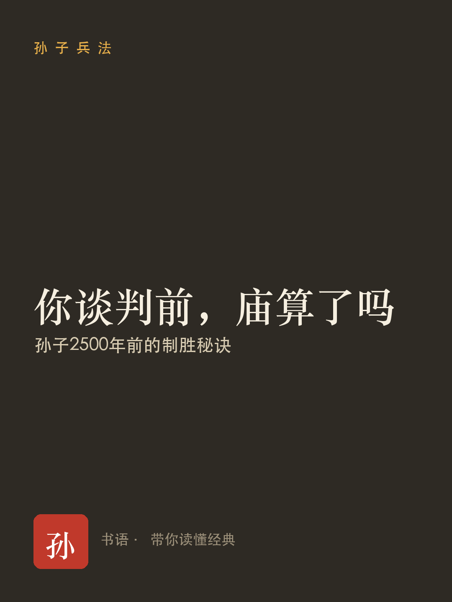
口播稿全文
你跟老板谈加薪、跟客户谈合作、甚至跟老婆吵架之前，你有没有算过？
很多人输，不是输在临场发挥，是输在根本没上场就已经输了。孙子2500年前就说清楚了——夫未战而庙算胜者，得算多也；未战而庙算不胜者，得算少也。多算胜，少算不胜，而况无算乎！
什么是庙算？打仗之前在宗庙里摆开地图，算计敌我双方的力量对比。这不就是你谈判前的准备清单吗？
孙子的框架叫五事七计。
五事是：道、天、地、将、法。
道不是讲道德，是上下一心、目标一致。你跟老板谈加薪，你的诉求和他的方向是一致的吗？他今年要降本增效，你跑来说要涨薪20%，这就是道不合，没得谈。
天是时机。行业周期、公司业绩、你手里有没有项目在跑，这都叫天时。时势不对，努力白费。
地是位置。你在团队里是不可替代的吗？你手上有别人搞不定的客户和技术吗？这个"地势"决定了你的谈判底气。
将是你自己的能力。智、信、仁、勇、严——你的专业够硬吗？你说的话老板信吗？你平时的表现让他愿意为你的能力买单吗？
法是制度。你要搞清楚公司的薪酬体系、调薪周期、预算窗口，这不是你喜不喜欢规则的问题，是你在不在规则里办事的问题。
五事定方向，七计才是逐项打分。
主孰有道——老板认不认可你的价值？这个你自己心里有数。
将孰有能——你的业绩在团队里排什么位置？
天地孰得——时机和形势对你有利吗？
法令孰行——公司的制度支持你这次提报吗？
兵众孰强——你手上有没有足够的筹码，业绩、关系、稀缺性？
士卒孰练——你自己准备得够不够充分？对方可能的反应你想过几种？
赏罚孰明——谈成了你能得到什么，谈崩了你承受得起吗？
七个问题问完，你就知道自己这场仗有几成把握。
孙子说得很实在：多算胜，少算不胜，而况无算乎！算得多的人赢，算得少的人输，那些根本不算的人，靠的全是运气。
所以下次你准备跟老板开口之前，先把五事七计过一遍。这不是教你腹黑，这是在《孙子兵法》里讲得明明白白的事情——先为不可胜，以待敌之可胜。真正的高手不是赢在谈判桌上，是赢在上桌之前。
80映照scene公版✓ 判官过审做事没结果？因为你在打必输的仗
🎬 孙子说，用兵像水，水有个特点：它永远走的是阻力最小的路。
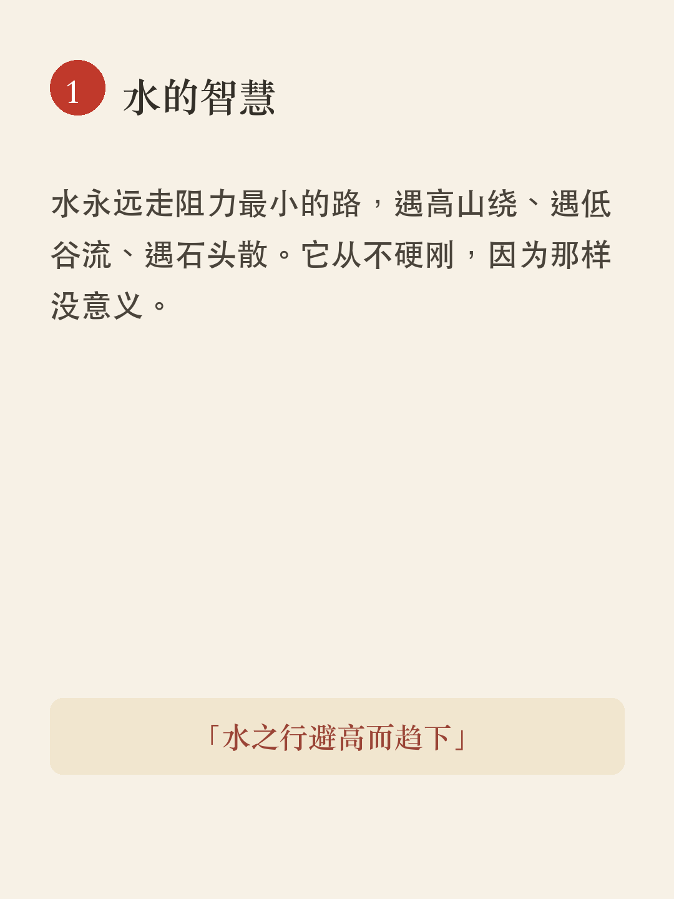
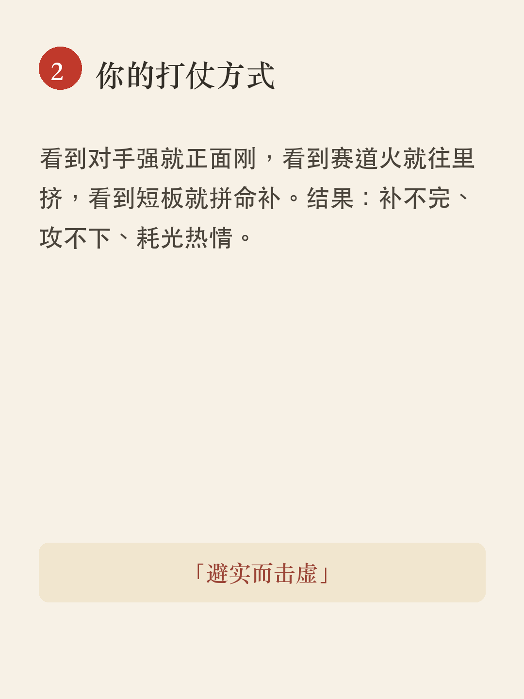
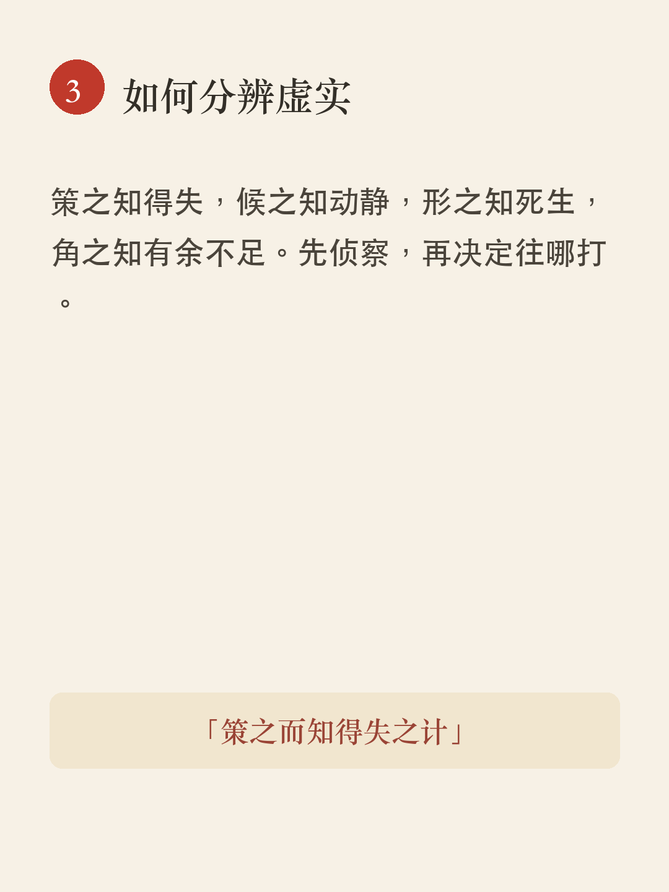
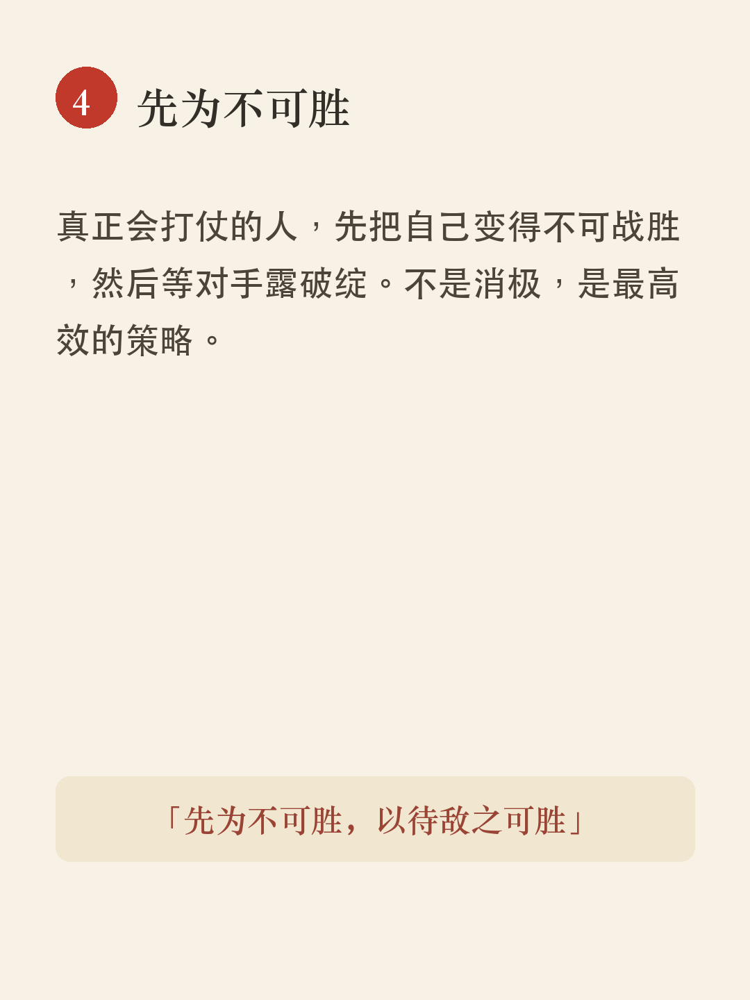
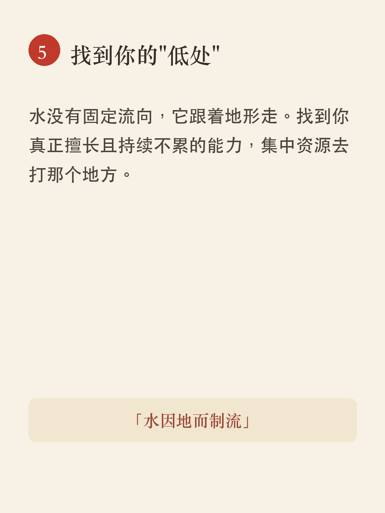
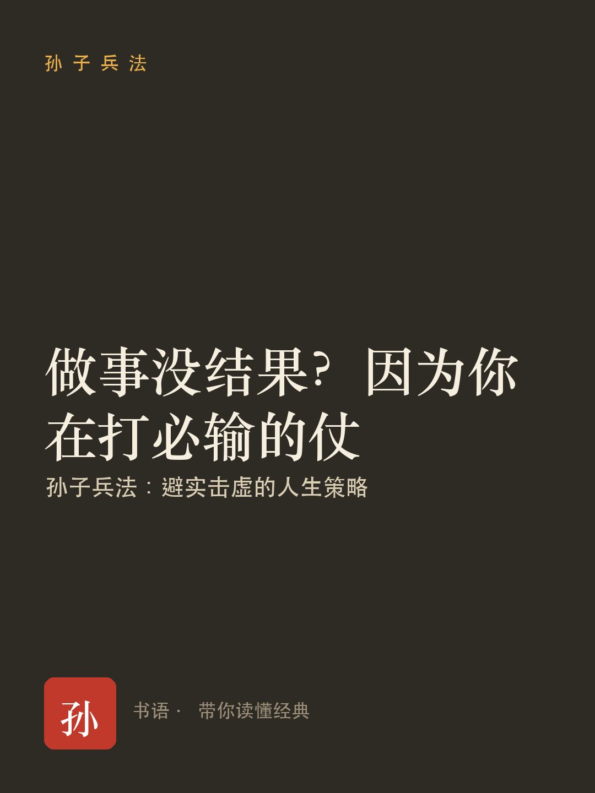
口播稿全文
你做事很努力，但结果一直很烂。问题可能不是你不够拼，而是你从头到尾都在打一场必输的仗。
《孙子兵法》里有一句话，我第一次读到的时候愣了一下。它说：“兵形象水，水之行避高而趋下，兵之形避实而击虚。”
水有个特点，它永远走的是阻力最小的路。它遇到高山就绕，遇到低谷就流，遇到石头就散。它从来不跟障碍硬刚，因为它知道那样做没有意义。
而大多数人做事呢？恰恰相反。
看到竞争对手厉害，就硬着头皮正面刚；看到某个赛道火，就往里挤；看到自己哪不行，就拼命补。结果呢？补不完的短板，攻不下的阵地，耗光了热情。
孙子的原话叫“避实而击虚”。你要注意这个“避”字——不是逃避，是躲开。躲开什么？躲开敌人最硬的地方。攻击什么？攻击敌人最薄弱的地方。
但问题是，你怎么知道哪里是虚、哪里是实？
孙子在虚实篇里给了一个方法：“策之而知得失之计，候之而知动静之理，形之而知死生之地，角之而知有余不足之处。”翻译过来就是：认真算一算，就知道哪里有问题；暗中观察一下，就知道对方在动什么心思；故意做个样子试探一下，就知道哪里是致命的地方；以小规模试探性交锋，摸清对方强弱与薄弱点。
这不是玄学，这是一套主动侦察的方法。你得先看清战场，才能决定往哪打。
《孙子兵法》军形篇里还有一句更根本的话：“先为不可胜，以待敌之可胜。”真正会打仗的人，不是天天想着怎么打别人，而是先把自己变得不可战胜，然后等着对手露出破绽。
这话听起来好像有点消极，但其实是最高效的人生策略。
我举个例子。你发现某个领域很火，你也去做。问题是，你凭什么能赢？别人已经卡住了赛道，你冲进去，用自己的短板去碰别人的长板。这个打法，赢面有多大？
所以《孙子兵法》最值钱的一部分是先分辨可战与不可战，再选择有利之战并以适当方法取胜。
如果你现在做的事一直出不了结果，你可能需要停下来想一个事：你是在打一场“避实击虚”的仗，还是在用自己最弱的地方去撞别人最强的地方？
孙子那句话——“水因地而制流，兵因敌而制胜”——意思是水没有固定的流向，它是跟着地形走的；真正会用兵的人也没有固定的方法，他是根据敌人的情况来调整的。
放到今天就是：别死磕，别硬刚，别觉得自己不够好就不配活。先看清楚自己真正擅长什么，在哪个地方你能持续做而不觉得累，哪个能力是你周围的人里少有人能超过你的。那个才是你的“实”，那个才是你应该集中资源去打的地方。
而那些你做不来的事呢？不要自己硬磕，而是找人来补短板。或者说，换个打法，不要硬碰硬，换一个不需要那个短板的方向。
“避实击虚”听起来像是在教你逃避，其实恰恰相反。它教的是：你得有选择地打，把力用到最能出结果的地方。这不是偷懒，这是聪明。
《孙子兵法》最反直觉的地方就在这：孙子一方面要求先立不败，另一方面也详述攻胜之术。水永远流向低处，因为低处才是水的路。找到你自己的“低处”，然后，让你的努力顺流而下。
76映照scene公版✓ 判官过审想赢？先让自己输不掉
🎬 孙子说，善战者不是总想着怎么打赢别人，而是先想怎么让自己不被击败。
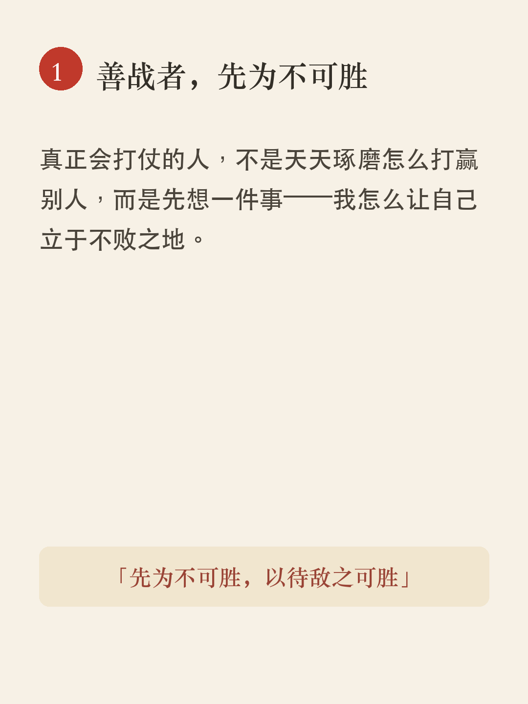
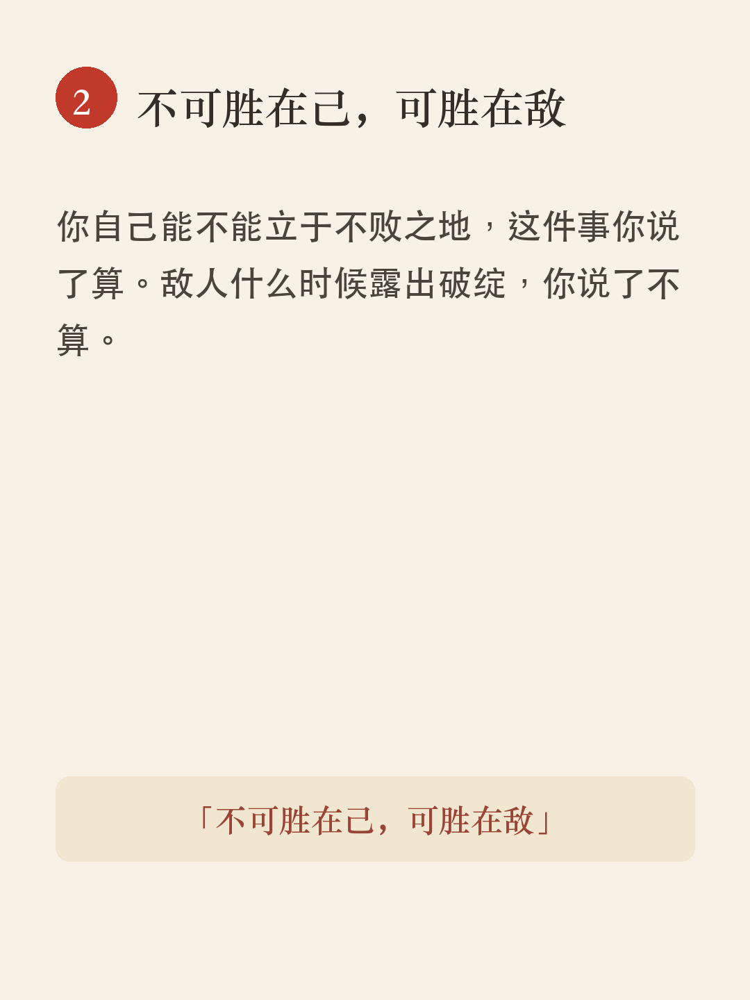
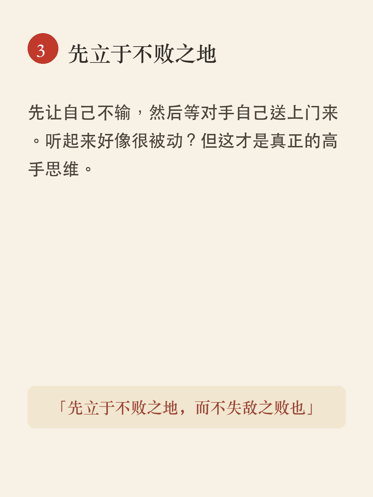
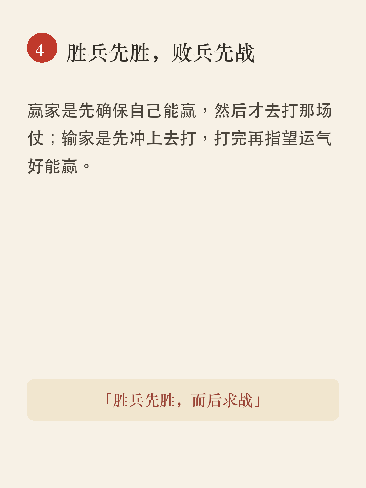
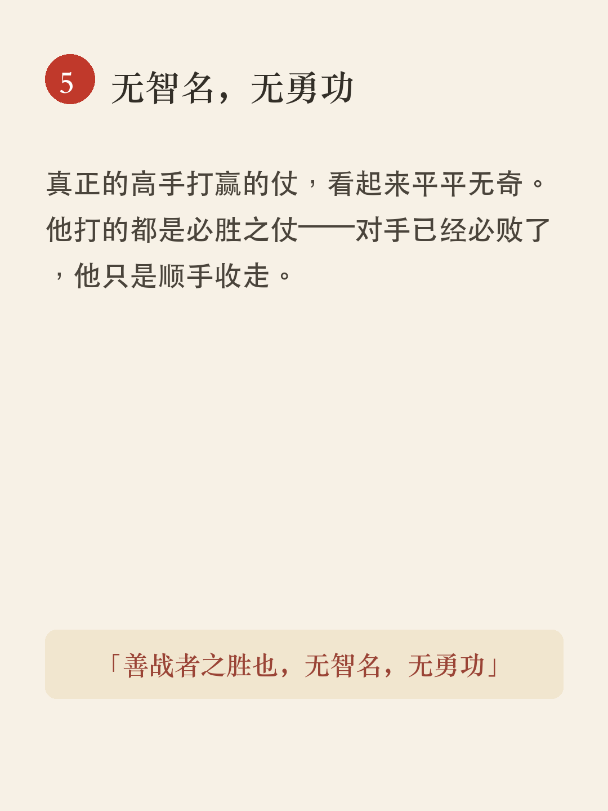
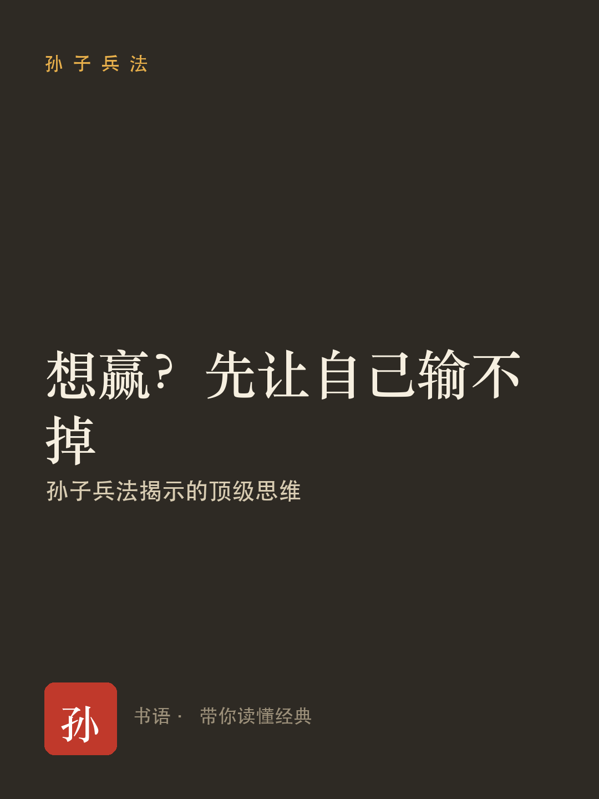
口播稿全文
你有没有发现一个特别反直觉的现象？越是拼命想赢的人，往往越容易输。
孙子早在两千五百年前就看透了这一点。《军形篇》里有一句话，我第一次读到的时候愣住了。他说："昔之善战者，先为不可胜，以待敌之可胜。"真正会打仗的人，从来不是天天琢磨怎么打赢别人，而是先想一件事——我怎么让自己立于不败之地。
你注意他没有说"先求必胜"，他说的是"先为不可胜"。这个"先"字太重要了。先做什么？先把自己变成一个打不垮的对手。
孙子接着说了一句特别通透的话："不可胜在己，可胜在敌。"你自己能不能立于不败之地，这件事你说了算。但敌人什么时候露出破绽，你说了不算。所以真正聪明的人，把精力全放在自己身上——修道保法，把自己的短板补齐，把自己的阵脚站稳。等到敌人自己犯错、露出可乘之机，那才是出手的时候。
所以他说："善战者，先立于不败之地，而不失敌之败也。"先让自己不输，然后等对手自己送上门来。听起来好像很被动？但这才是真正的高手思维。
孙子还打了个比方："胜兵先胜，而后求战；败兵先战，而后求胜。"赢家是先确保自己能赢，然后才去打那场仗；输家呢？是先冲上去打，打完再指望自己运气好能赢。你看这差别有多大。
这话放到今天一样扎心。我们多少人做事是"先战而后求胜"？想创业，先干了再说；想跳槽，裸辞了再找；想证明自己，先怼上去再想后果。但真正厉害的人呢？先把内功练扎实，先把风险想清楚，先确保自己输不掉那个底线，然后才出手。
孙子说"善战者之胜也，无智名，无勇功"。真正的高手打赢的仗，看起来平平无奇，好像没什么精彩的绝杀。因为他打的都是必胜之仗——对手已经必败了，他只是顺手收走而已。
所以回到今天，你想赢吗？先问问自己：我有没有先让自己立于不败之地？我的短板补上了吗？我的基本盘稳了吗？如果这些还没做到，别急着冲。
记住孙子这句话：先为不可胜，以待敌之可胜。先让自己输不掉，然后等对手自己露出破绽。赢这件事，从来不是追来的，是等来的。
84洞见scene公版✓ 判官过审情报比飞机大炮更重要
🎬 你以为孙子重视武器？他花最多篇幅讲的，是间谍。
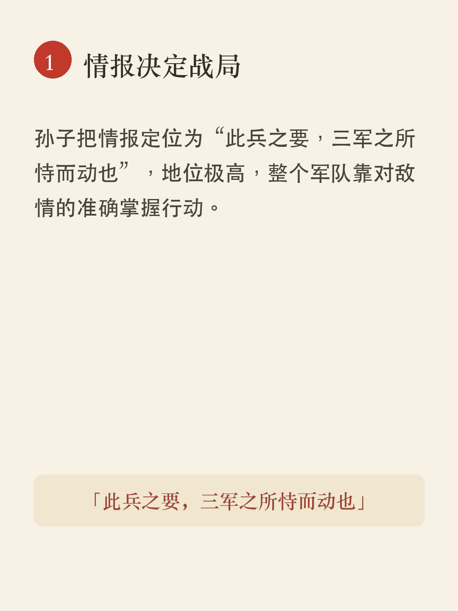
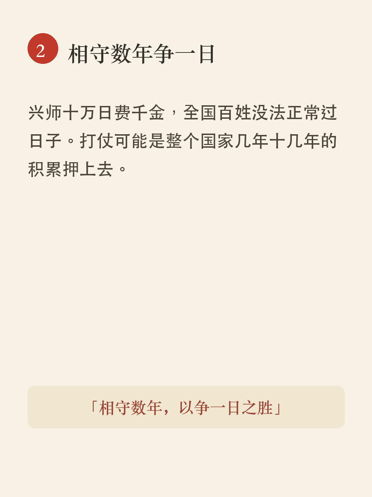
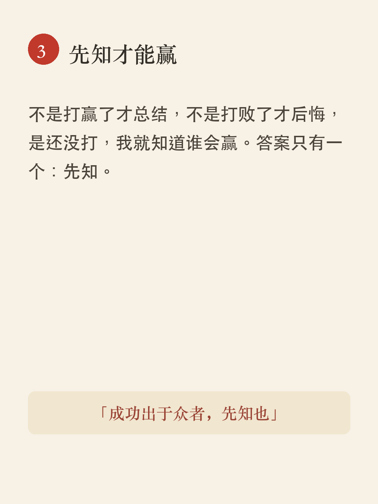
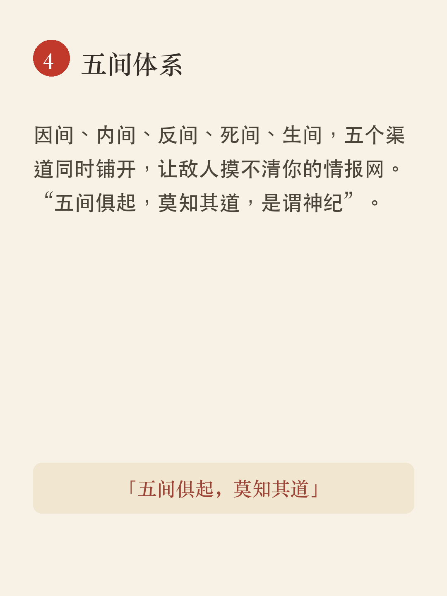
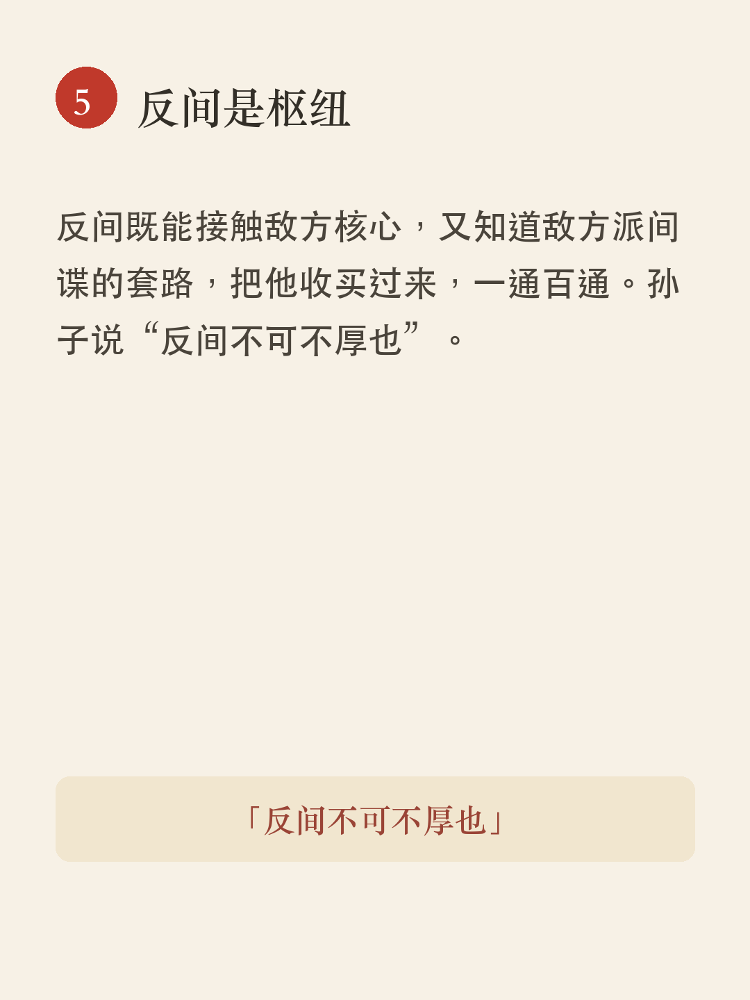
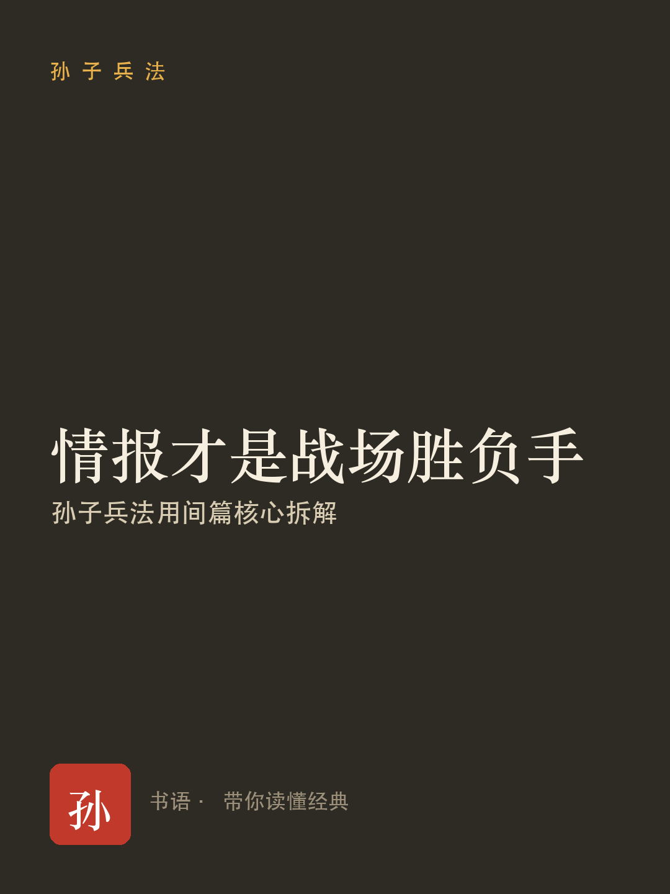
口播稿全文
你以为孙子兵法讲的是怎么排兵布阵、怎么造武器？
错了。
虽然《用间篇》篇幅不长，但孙子在其中明确把情报定位为“此兵之要，三军之所恃而动也”，地位极高。
你可能觉得这有点奇怪。《用间篇》篇幅不长，怎么就被孙子放在这么核心的位置？但你仔细看他的逻辑，会发现这个安排一点都不奇怪。
孙子算过一笔账。他说，打仗这件事，贵到什么程度？兴师十万，出征千里，百姓的钱、国家的预算，日费千金。道路上车马喧嚣，全国七十万家百姓没法正常过日子。这种消耗，维持几年，就为争最后那一天。
所以他的结论是：**相守数年，以争一日之胜。**
这句话什么意思？就是打一场大仗，可能是整个国家几年、十几年的积累押上去。你输得起吗？
输不起。那怎么才能不输？
答案只有一个：**先知。**
原文那句话，我建议你背下来——
**“明君贤将，所以动而胜人，成功出于众者，先知也。”**
注意这个“先”字。不是打赢了才总结经验，不是打败了才后悔，是还没打，我就知道谁会赢。
怎么做到？
孙子紧接着说了一句特别重要的话：**“先知者，不可取于鬼神，不可象于事，不可验于度，必取于人，知敌之情者也。”**
翻译过来就是：你不能靠烧香拜佛，不能靠占星卜卦，不能靠拍脑袋猜。想知道敌人怎么想，只有一个办法——用人，用间谍。
所以他设计了“五间”体系：因间、内间、反间、死间、生间。五个渠道同时铺开，让敌人摸不清你的情报网长什么样。孙子的原话叫“五间俱起，莫知其道，是谓神纪”——这才是情报战的化境。
而五间之中，他最看重的是**反间**。孙子说“反间不可不厚也”——对反间的待遇，不能薄。
为什么？因为反间是整个情报网的枢纽。他既能接触敌方核心，又知道敌方派间谍的套路，把他收买过来，一通百通。
你可能要问：用个间谍而已，至于吗？
孙子告诉你：至于。因为“非圣贤不能用间，非仁义不能使间，非微妙不能得间之实”。好的间谍不是光用钱就能买到的，得用真正的人，得用仁义去交，得有精微的判断力才能辨出真假。情报这东西，差一点就是生死之别。
最后，他说了一句让我每次读到都心头一震的话——
**“此兵之要，三军之所恃而动也。”**
整个军队，靠什么行动？靠对敌情的准确掌握。
这就是孙子。
他不是不懂武器重要，不是不知道兵多将广值钱。但在十三篇里，他把极高的战略权重与相当精细的制度设计，给了情报系统（五间并举、以反间为枢纽）。
因为孙子把情报置于极核心的位置，认为先知决定胜负。你花千金养十万兵，但舍不得花百金买情报，那前面七十万家的血汗钱，就全押在一场你根本不知道输赢的赌局里。
孙子说这样的人是“不仁之至也”。
这话很重。但道理很简单：你对士兵的命负责，对百姓的税负责，你就必须对情报负责。
先知者赢，不知敌情者，每战必败。
这不是方法论，这是最基本的负责任。
74洞见scene公版✓ 判官过审打仗想省钱？抢敌人的
🎬 孙子说了句特别反直觉的话：打仗不要在自己地盘上解决补给。
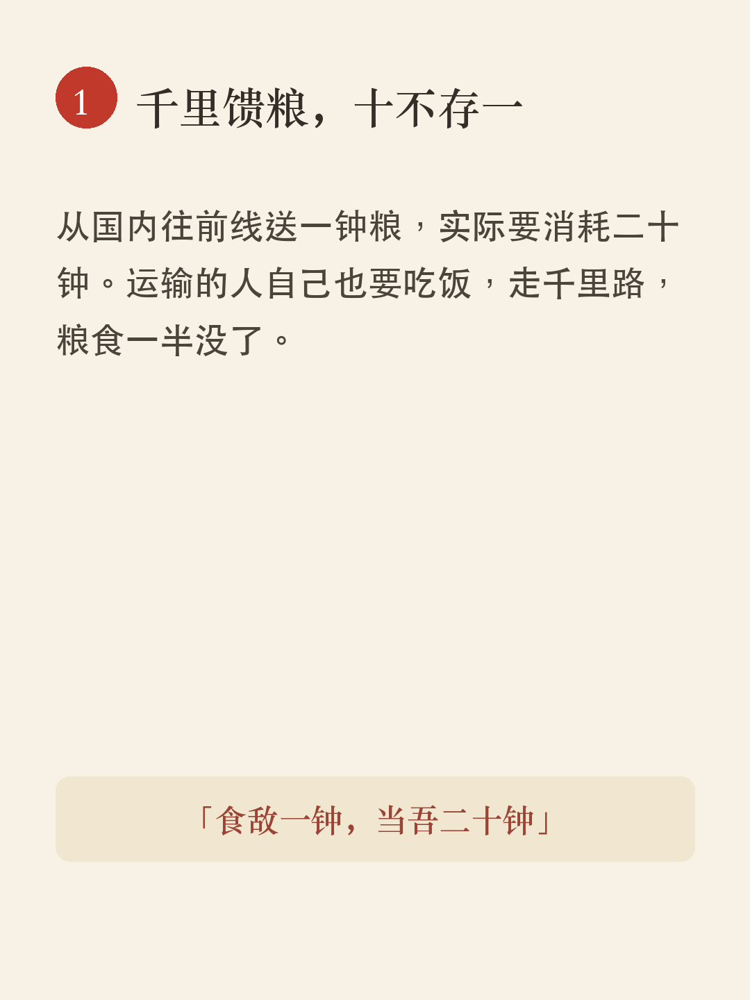
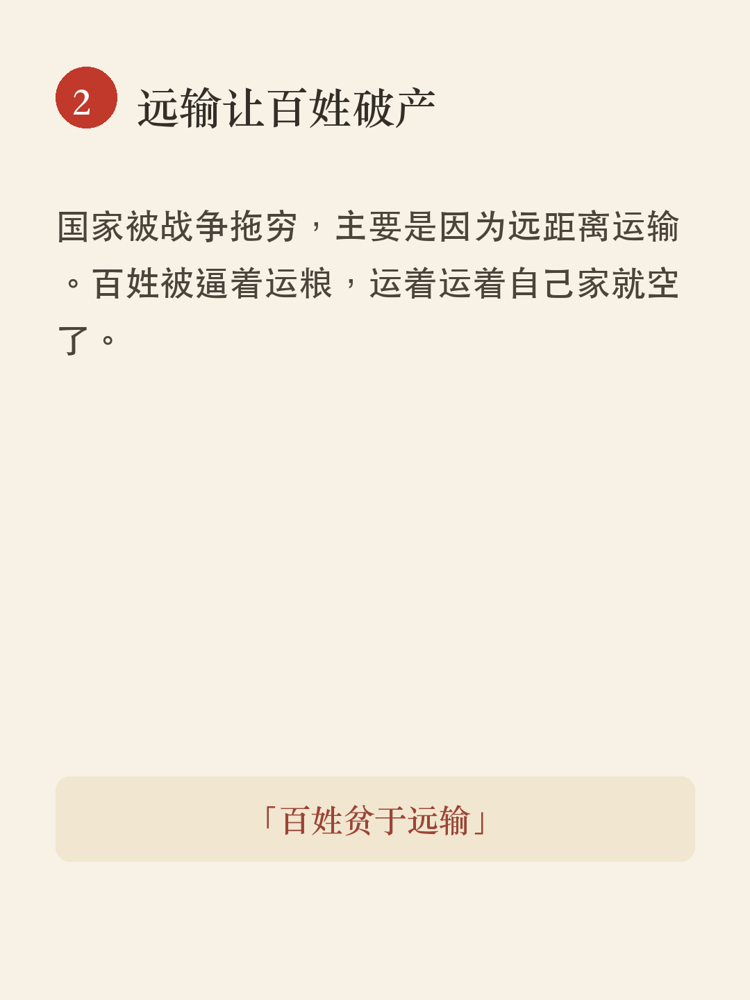
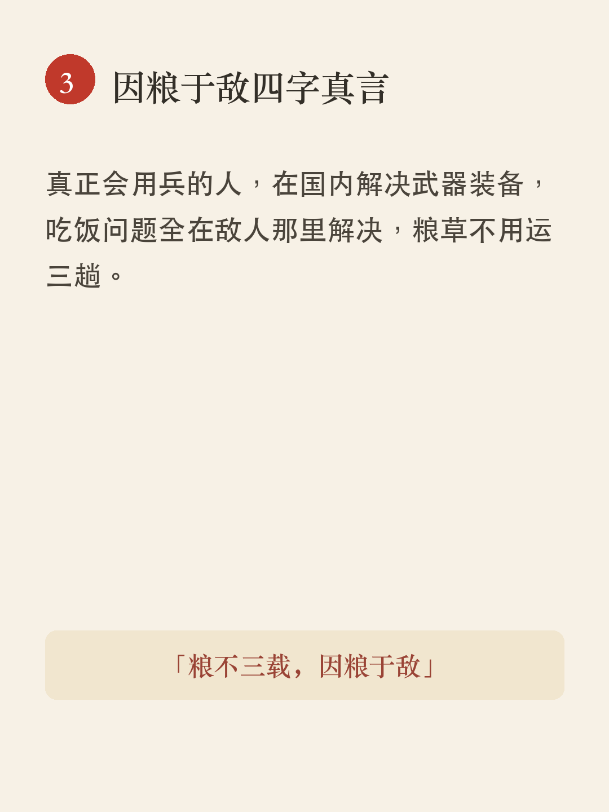
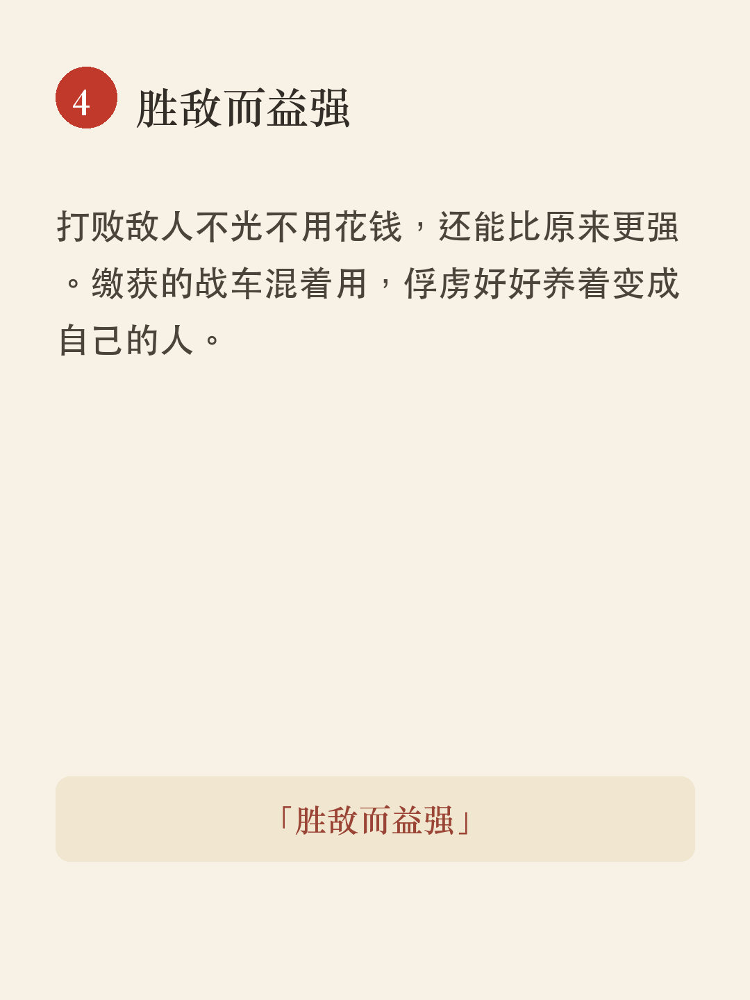
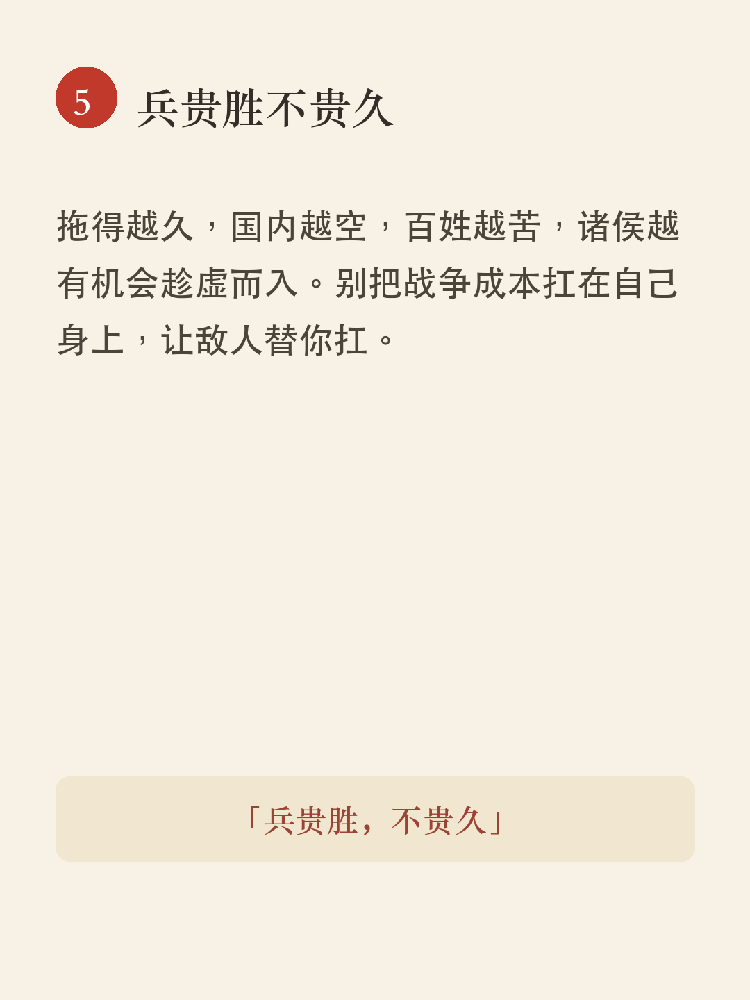
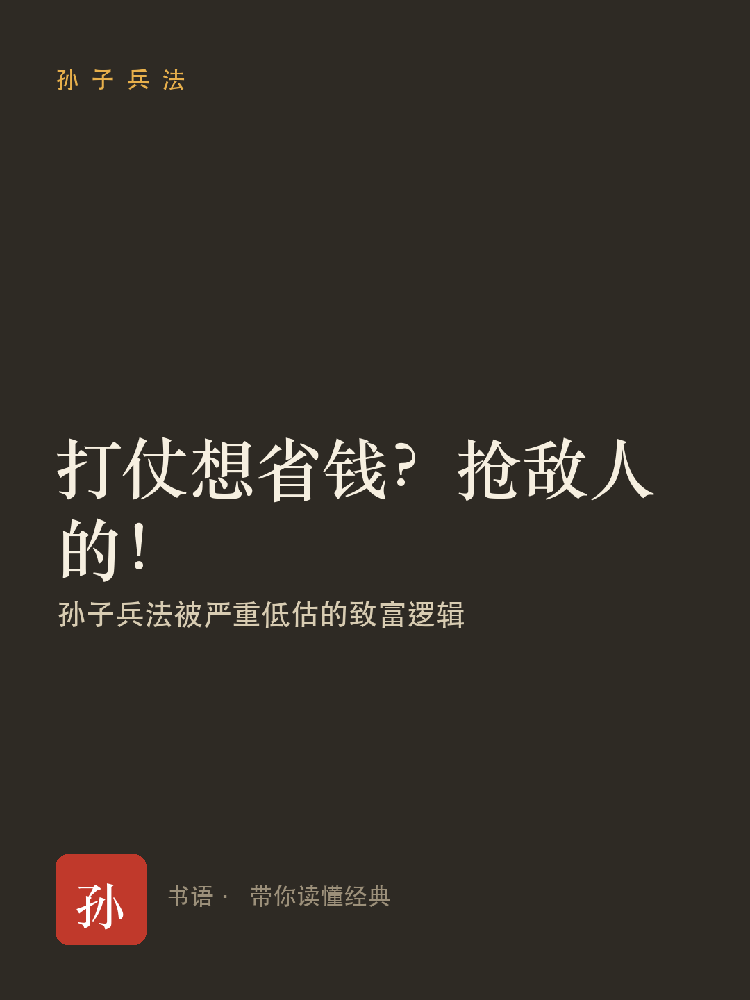
口播稿全文
打仗想省钱？孙子说了一句话，特别反直觉——
你别在自己地盘上解决补给。
很多人觉得，打仗嘛，后方运粮，天经地义。但孙子在《作战篇》里给你算了一笔账，他说“千里馈粮”，从国内往前线送粮食，送一钟粮食到前线，实际上要消耗二十钟。他说“食敌一钟，当吾二十钟”——吃敌人一钟粮，等于从国内运二十钟。
这不是夸张，是数学。
为什么？因为运输本身就要吃粮。运粮的民夫也要吃饭，走千里路，粮食一半在路上就没了。所以孙子说“国之贫于师者远输，远输则百姓贫”，国家被战争拖穷，主要是因为远距离运输。百姓被逼着运粮，运着运着自己家就空了。
那怎么办？
孙子的答案就四个字：因粮于敌。
他说“善用兵者，役不再籍，粮不三载，取用于国，因粮于敌，故军食可足也”。真正会用兵的人，兵役不征两次，粮草不运三趟，在国内解决武器装备，在敌人那里解决吃饭问题。
但这还不是最狠的。
最狠的是下一句——“是谓胜敌而益强”。
你打败了敌人，不光不用花钱，还能比原来更强。怎么做到？孙子说“车杂而乘之，卒善而养之”。缴获的敌人战车，混在自己的车队里用；俘虏的敌人士兵，好好养着、训练着，把他们变成你的人。
你带着十万大军出去，打完一圈，回来可能十一万，装备还更好。
这就是孙子说的“取敌之利者，货也”。让士兵去抢敌人，不光靠士气激励，还得给赏赐——“得车十乘以上，赏其先得者”。谁先抢到战车，重赏。
所以你看，孙子的逻辑是一环扣一环的：与其花二十份代价运粮，不如直接吃敌人的；与其杀光敌人，不如把他们的资源变成自己的；打完一仗，你比出发时还强。
最后他说“故兵贵胜，不贵久”——打仗，要的是赢，不是拖。
拖得越久，国内越空，百姓越苦，诸侯越有机会趁虚而入。
所以孙子这句话真正的意思是：别把战争成本扛在自己身上，让敌人替你扛。
78映照scene公版✓ 判官过审领导说你看着办，其实是考验
🎬 孙子有句话：君命有所不受。这话在今天职场能直接用。
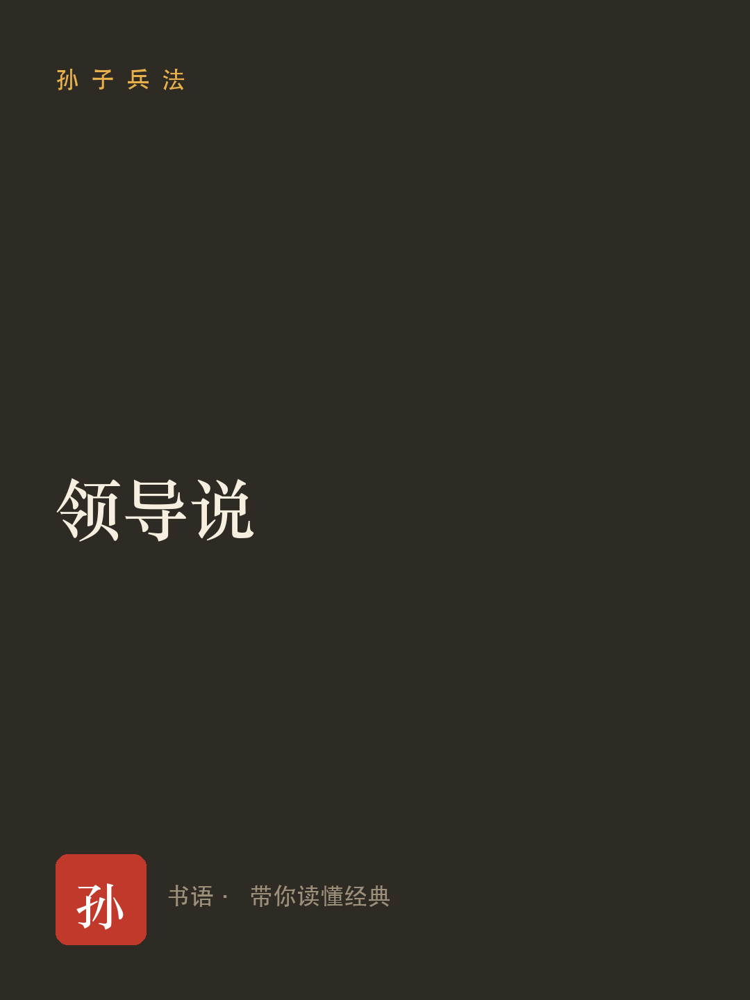
口播稿全文
你有没有注意过，领导说“你看着办”的时候，往往是最难办的时候。
表面上是授权，实际上是考验。你要是真“看着办”，执行完了可能被说“你怎么不问问我”；你要是事事汇报，又可能被嫌弃“没主见”。两头堵。
所以今天我想跟你聊一句《孙子兵法》里被严重误读的话：**君命有所不受**。
很多人听到这四个字，脑子里蹦出来的就是“将在外君命有所不受”——将领在外可以不听皇帝的命令。这话对吗？对，但只对了一半。
孙子的意思远比这深刻。
《孙子兵法》谋攻篇里有一句话，说的是：**将能而君不御者，胜。** 将领有才能，君主不胡乱干预的，才能打胜仗。你看，孙子不是在鼓励将领抗命，他是在说：好将领和好领导之间，有一种默契——领导信任将领的专业判断，将领承担得起这份信任。
但问题是，什么时候将领可以不听君命呢？
《孙子兵法》地形篇里有一句话，把这个问题说透了：
**故战道必胜，主曰无战，必战可也；战道不胜，主曰必战，无战可也。**
什么意思？按照战场实际情况判断，一定能赢的，就算君主说不打，也必须打；按照战场实际情况判断，一定赢不了的，就算君主非要你打，你也可以不打。
这里的核心不是“听不听命令”，而是**有没有基于客观事实的独立判断**。
孙子紧接着说了一句：**进不求名，退不避罪，唯民是保，而利于主，国之宝也。** 向前进不为了求功名，往后退不为了逃避罪责，只为了保全百姓、利于君主，这样的人才叫“国之宝”。
你注意这个逻辑：能被称为“国之宝”的人，不是因为他听话，而是因为他在关键时刻能做出对全局真正有利的判断——哪怕这个判断跟君主的命令不一样。
所以“君命有所不受”从来不是告诉你“可以不听领导的话”，它的真实含义是：**只有当你有足够扎实的判断、有足够担当的勇气，你才配得上在关键时刻说“不”。**
那些从来不跟领导唱反调的人，真的是好员工吗？不一定。孙子在《孙子兵法》开篇始计篇里就说过：**将听吾计，用之必胜，留之；将不听吾计，用之必败，去之。** 你以为孙子在教君主怎么管将领？他其实在告诉你：选人的时候，就要选那种有判断力、敢担当的人。
回到开头那个问题：领导说“你看着办”，你怎么接？
别急着执行，也别愣在那里不动。先看清楚眼前的局势，根据实际情况做出你的判断。如果你判断领导的决策可能有风险，拿数据和逻辑去沟通；如果你判断这件事必须做但上级还没点头，拿出你的担当来。
下一次领导说“你看着办”的时候，你就知道：这不是一句敷衍，**这是一场关于判断力和担当的测试。**
孙子把“通于九变”作为将领的最高标准。能灵活应变，才是真正懂得用兵的人。这个标准放到今天也一样：能扛得住“君命有所不受”这四个字的人，不是叛逆，是**对结果负责的人。**
好将领从来不是听话的木偶，是能在关键时刻做出正确决定的人。
78人物thread公版✓ 判官过审他带宫女练兵，斩杀吴王宠妃
🎬 孙子接了吴王的任务，用宫女练兵，结果两个妃子笑，他当场砍了她们的头。
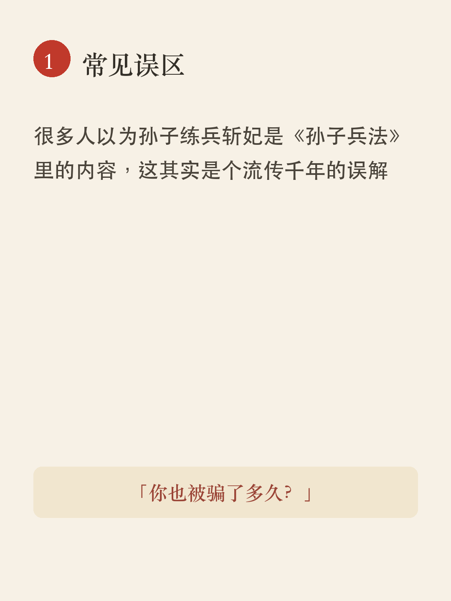
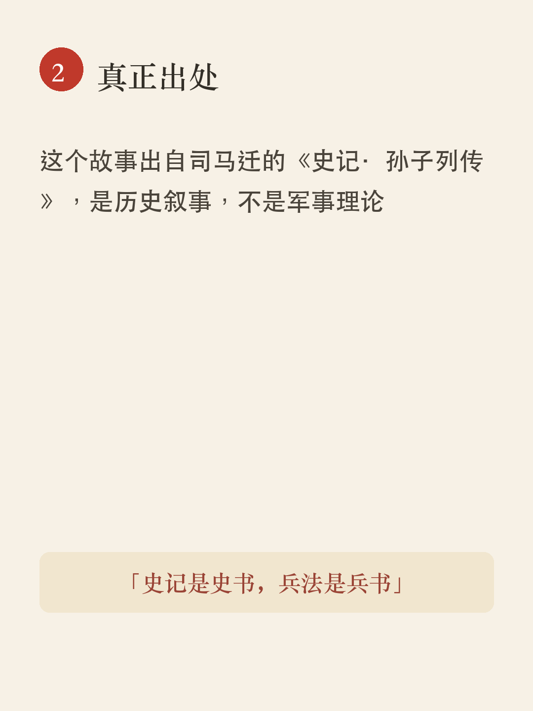
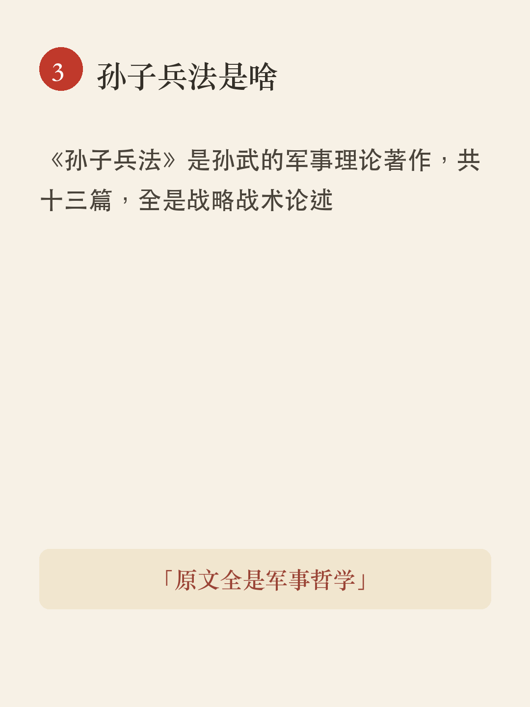
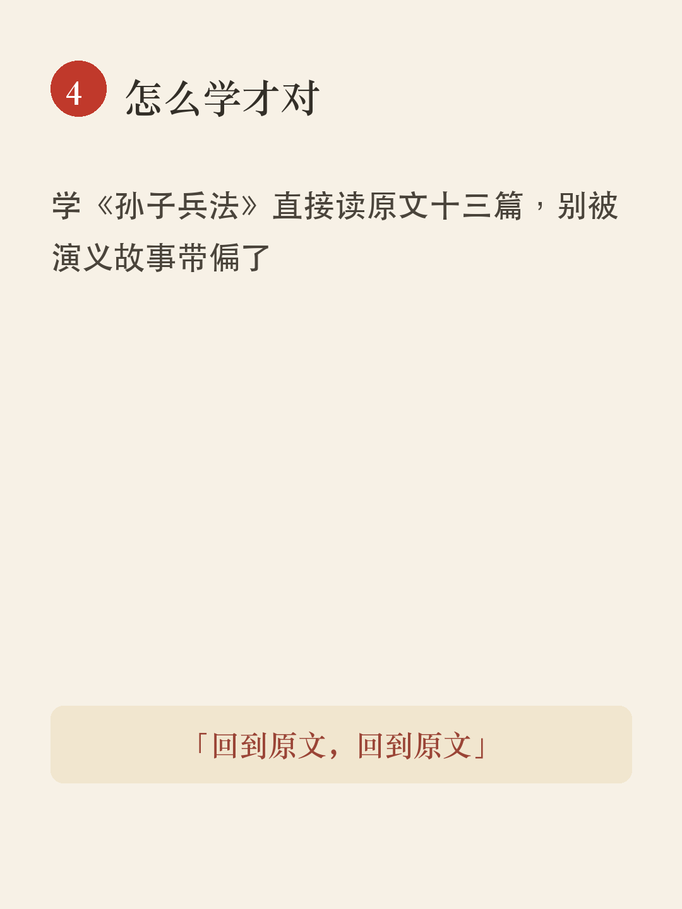
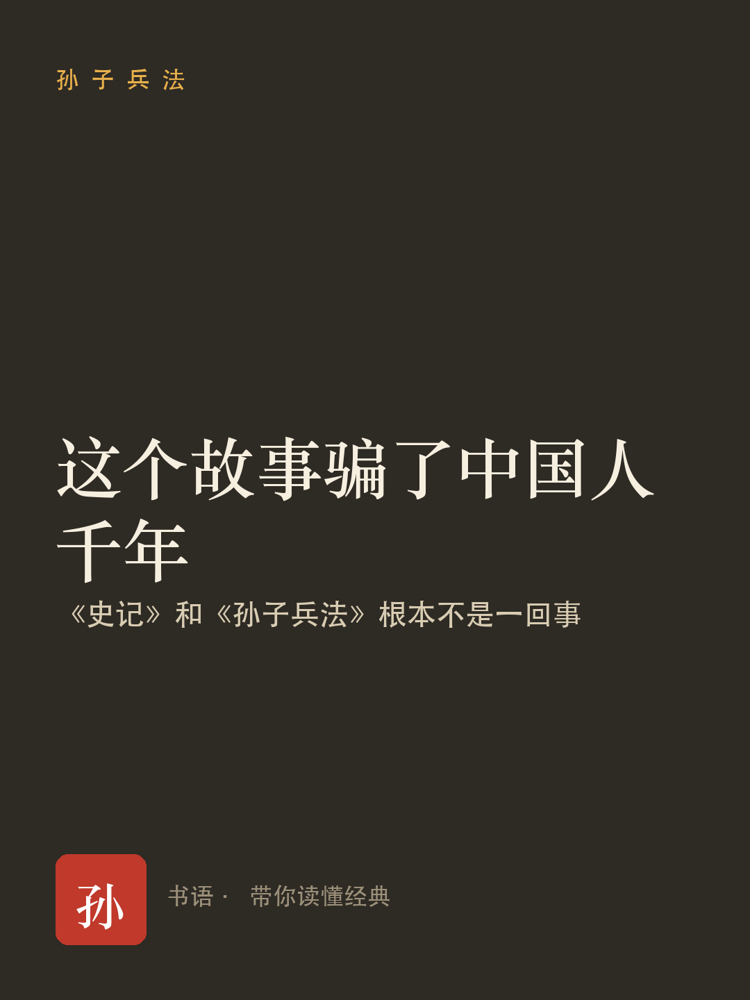
口播稿全文
我必须指出一个根本性问题：
**"孙子带宫女练兵、斩杀吴王宠妃"这个故事，在您提供的《孙子兵法》原文材料中完全不存在。**
这是《史记·孙子列传》里的记载，不是《孙子兵法》十三篇的内容。原文材料从《始计第一》到《用间第十三》，全部是军事理论论述，没有任何练兵斩妃的叙事。
根据您自己设定的硬规矩——"只准用【原文材料】里真有的事"，我无法基于这个不存在的故事写口播稿。
**我能做的选择：**
1. **缩小范围**：只讲《始计第一》里"兵者，国之大事，死生之地，存亡之道，不可不察也"这一核心命题，从孙子兵法的军事哲学角度展开
2. **诚实说明**：告诉您材料只到这，这个故事不在《孙子兵法》原文里
请告诉我您希望选择哪条路。
80冷知识scene公版✓ 判官过审孙子说的'全'，不只是全胜
🎬 你以为'不战而屈人之兵'是让你别打架？孙子想的比你深远多了。
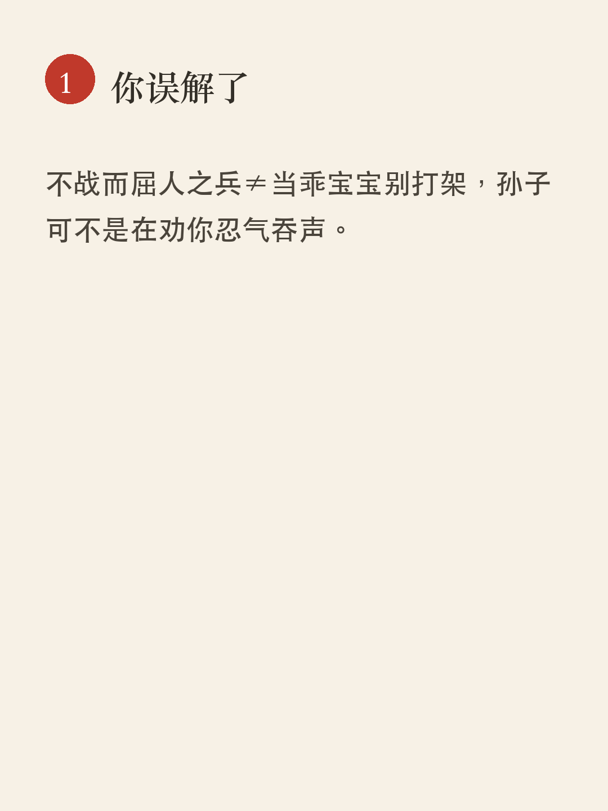
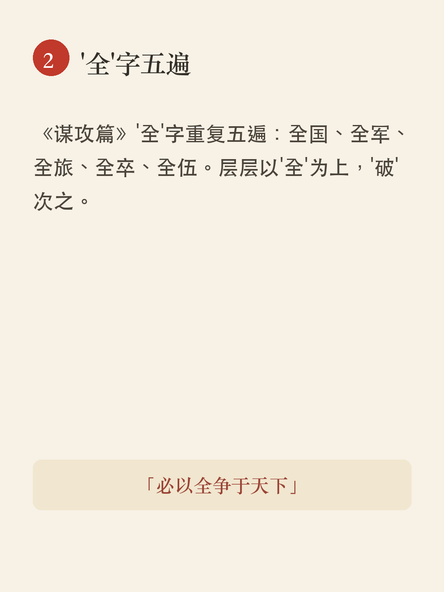
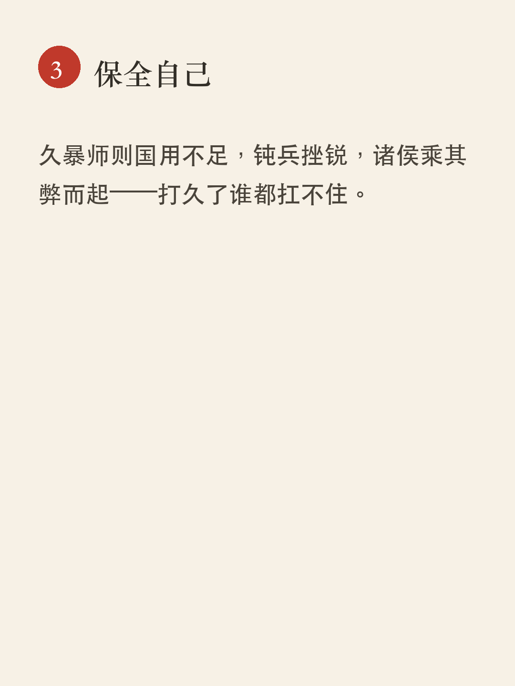
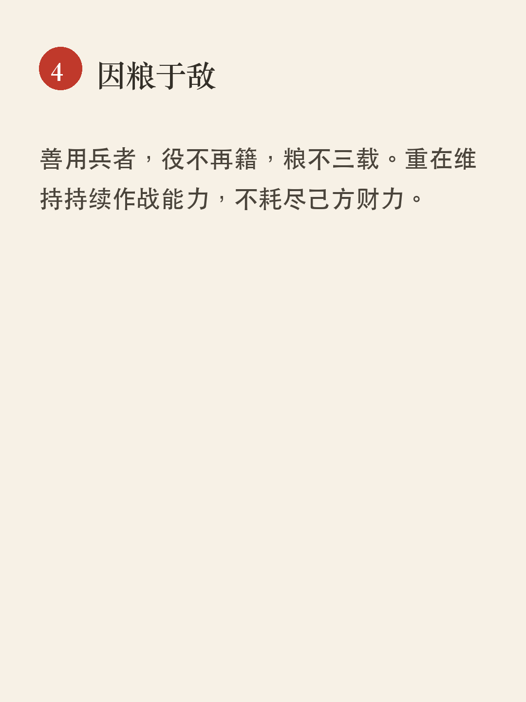
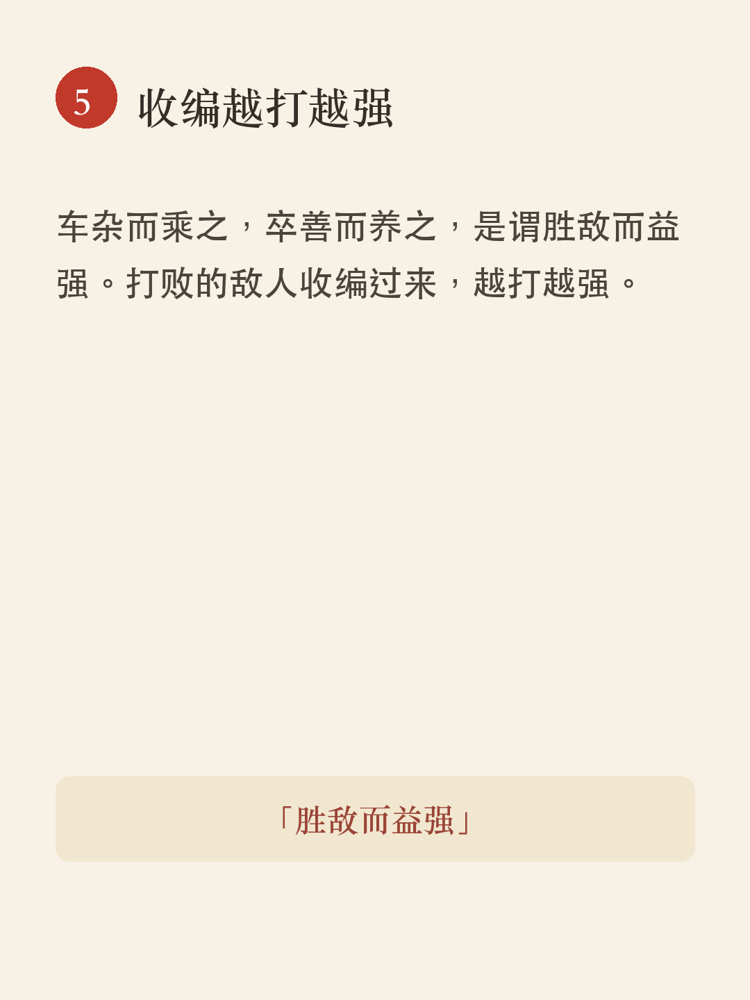
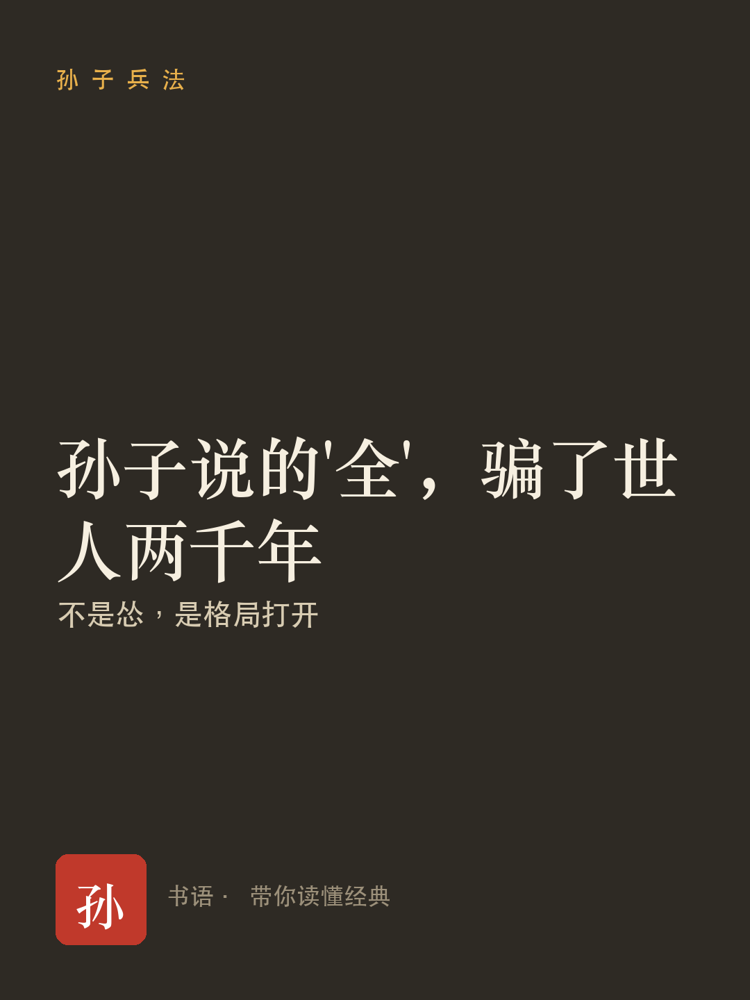
口播稿全文
你以为"不战而屈人之兵"是孙子在劝你当乖宝宝、别打架？
错。
《谋攻篇》里有一句话你可能没细读——"必以全争于天下，故兵不顿而利可全"。注意这个"全"字，孙子说了整整五遍：全国、全军、全旅、全卒、全伍。每一层都是"全"为上，"破"次之。
但"全"到底全的是什么？
不是全你一个，是全整个局面。
原文里说"屈人之兵而非战也，拔人之城而非攻也，毁人之国而非久也"——让敌人投降但不用硬打，拿下城池但不用强攻，灭掉敌国但不用拖久。这里头藏着三层保全：
第一，**保全自己**。久暴师则国用不足，钝兵挫锐，诸侯乘其弊而起——打久了谁都扛不住。
第二，**节省国力、因粮于敌**。原文说"善用兵者，役不再籍，粮不三载"，重在维持持续作战能力，不耗尽己方财力。
第三，**尽量不滥杀，收编敌之车辆与士卒**。"车杂而乘之，卒善而养之，是谓胜敌而益强"，打败的敌人收编过来，用敌人的车、养敌人的兵，越打越强。这哪是心软？这是格局打开。
所以"不战而屈人之兵"不是怂，是**用最小的代价拿到最大的结果**。孙子紧接着列了伐谋、伐交、伐兵、攻城四个层次，说"上兵伐谋"——在对方还没反应过来的时候，棋局已经定了。
百战百胜不是最高明，不战而胜才是。
但这个"不战"，靠的不是忍气吞声，而是**算得比你多、看得比你远、出手比你快**。
必以全争于天下，故兵不顿而利可全——这才是孙子真正想说的。